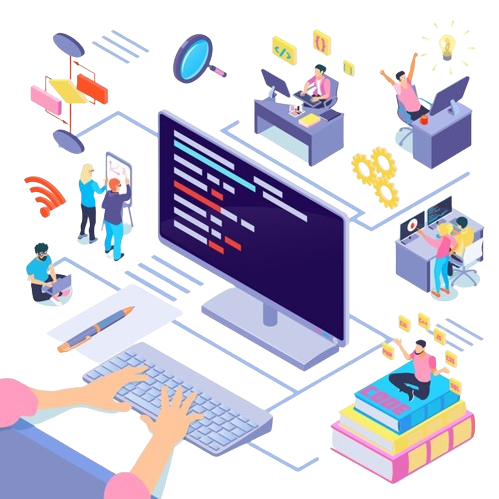

Computer Science Engineering
Computer Science Engg is a very demanding course in present times, as all the work of the present generation is dependent on computers. Computer Science Engg department has various software & hardware labs with adequate infrastructure with wi-fi connectivity.
Competency Profile
- Knowledge about working of computers , peripherals .
- Understanding of the functioning and administration of various operating system.
- Ability of installing computer system including loading software.
- Understanding architecture of Microprocessor, Interfacing techniques and Interrupts.
- Knowledge about Computer System architecture and Organization.
- Understanding of System software and Ability to use Application Software.
- Ability of Assembling the Computers .
- Skills in developing algorithms and data flows diagram.
- Ability of writing computer programs in high level languages and in assembly language.
- competency of operating computers system and popular software packages.
- Understanding of databases and knowledge of relational database Management system.
- Understanding the concept of Networking.
- knowledge of data structures and programming techniques.
- knowledge of web technologies and their applications in various areas.
- Understanding the concept of network technology LAN and WAN
- Establish Local area networks.
- Knowledge of Current trends in Information Technology.
- Understanding the Web page Designing.
- Practice of Computer Hardware including Networking Systems.
- Understanding the principle of Applied Sciences and Mathematics for developing Scientific temper.

| Serial NO | NAME OF LAB |
|---|---|
| 1. | PROJECT LAB |
| 2. | BIT LAB |
| 3. | RDBMS LAB |
| 4. | PROGRAMMING LAB |
| 5. | COMMUNICATION SYSTEM LAB |
| 6. | WORKSHOP LAB |